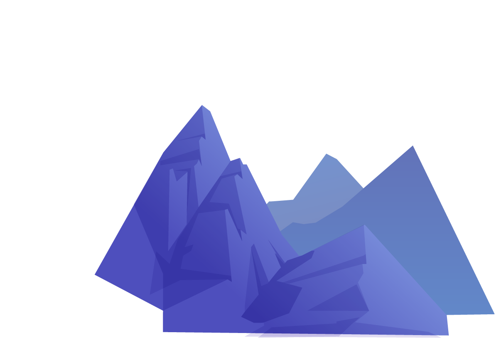
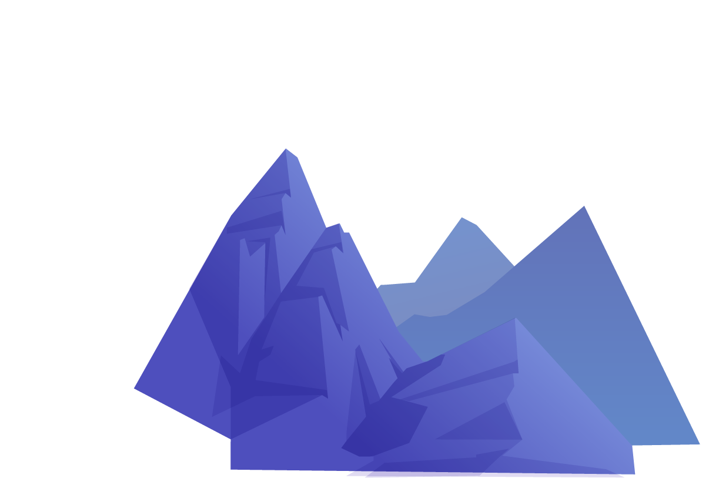

Types of Software and Common Use Cases:
E-commerce Websites (Shopping)
- E-commerce software: Platforms like Shopify, WooCommerce, or Magento allow you to create and manage an online store, including product management, payments, shipping, and customers.
- Inventory management software: Tools to track product stock, inventory levels, and sales points.
- Customer service software: Chatbots, ticketing systems, and knowledge bases to answer questions and resolve customer issues.
- Web analytics software: Tools like Google Analytics or Adobe Analytics to monitor website traffic, conversions, and user behavior.
Educational Platforms (Education)
- Learning management systems (LMS): Platforms like Moodle or Canvas allow you to create and manage online courses, including content delivery, assessments, and student progress tracking.
- Content creation tools: Text editors, presentation tools, and video recording software to create educational materials.
- Collaboration tools: Discussion forums, chat rooms, and video conferencing tools to facilitate communication between students and00 teachers.
- Assessment software: Tools to create and administer exams, quizzes, and assignments.
Sports Websites (Sports)
- Event management software: Tools to create and manage sporting events, including participant registration, event scheduling, and results tracking.
- Sports statistics software: Tools to collect and analyze match and player data.
- Live streaming software: Platforms to broadcast sporting events live over the internet.
- Forums and social media: Tools for sports fans to connect with each other and share news and opinions.
Other Types of Software
- Social media: Platforms like Facebook, Twitter, and Instagram allow users to create profiles, share content, and interact with other users.
- Productivity tools: Software like Google Workspace or Microsoft Office 365 allow users to create and edit documents, spreadsheets, and presentations.
- Project management tools: Software like Asana or Trello allow teams to plan, organize, and track work.
- Customer service tools: Chatbots, ticketing systems, and knowledge bases to answer questions and resolve customer issues.
News Websites
- Content management system (CMS): Platforms like WordPress or Drupal allow journalists to publish and edit news articles, images, and videos.
- Social media tools: Integrations with social media to share news articles and increase reach.
- Web analytics software: Tools like Google Analytics or Adobe Analytics to monitor website traffic, conversions, and user behavior.
- SEO tools: Tools to optimize website content for search engines.
Business Websites
- Customer relationship management (CRM) software: Tools to manage customer relationships, such as leads, opportunities, and customers.
- Email marketing software: Tools to create and send email marketing campaigns.
- Live chat software: Tools to chat with customers in real time and answer their questions.
- Web analytics software: Tools like Google Analytics or Adobe Analytics to monitor website traffic, conversions, and user behavior.
Non-Profit Websites
- Online donation software: Platforms to accept online donations securely.
- Volunteer management tools: Software to manage volunteers, including scheduling shifts and tracking progress.
- Fundraising tools: Tools to create and manage fundraising campaigns.
- Web analytics software: Tools like Google Analytics or Adobe Analytics to monitor website traffic, conversions, and user behavior.
Government Websites
- Authentication and login software: Tools to allow citizens to access government services online securely.
- Document management software: Tools to store, share, and manage government documents.
- Citizen engagement tools: Tools for citizens to engage with the government and share their ideas.
- Web analytics software: Tools like Google Analytics or Adobe Analytics to monitor website traffic, conversions, and user behavior.

 
